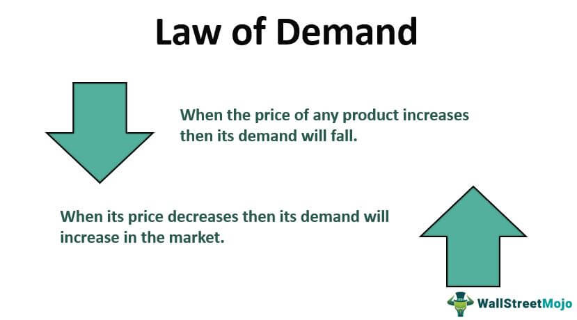
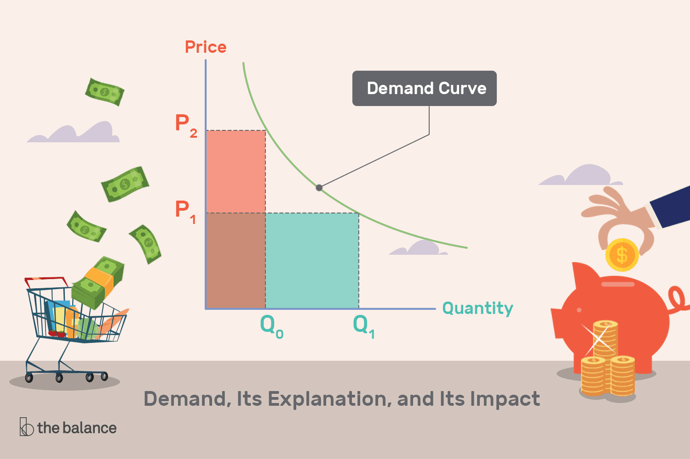
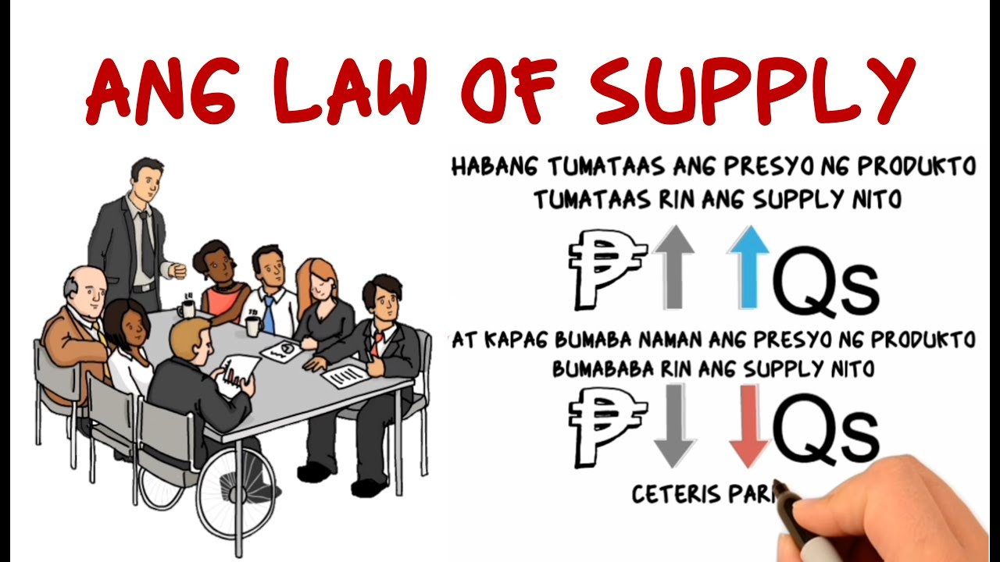
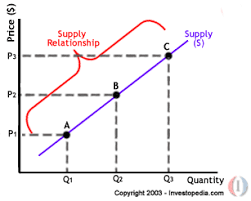

Lesson 1: Demand !
Tumutukoy sa dami ng produkto o serbisyo na gusto at kayang bilhin ng mga mamimili sa isang takdang presyo at partikular na panahon.
- Batas ng Demand
- - Kapag tumataas ang presyo, bumababa ang dami ng gusto at kayang bilhin at kapag bumaba ang presyo, tataas naman ang dami ng gusto at kayang bilhin.
- Ceteris Paribus
- - Nangangahulugang ipinagpapalagay na ang presyo lamang ang salik na nakaaapekto sa pagbabago ng quantity demanded, habang ang ibang salik ay hindi nagbabago o nakakaapekto rito.
- Substitution Effect
- - Ipinapahayag nito na kapag tumataas ang presyo ng isang produkto, ang mga mamimili ay hahanap ng pamalit na mas mura. Sa ganon, mababawasan ang dami ng mamimiling gustong bumili ng produktong may mataas na presyo.
- Income Effect
- - nagpapahayag na mas malaki ang halaga ng kinikita kapag mas mababa ang presyo. Kapag mababa ang presyo ng bilihin, mas mataas ang kakayahan ng kita ng tao na makabili ng mas maraming produkto. Kapag tumaas naman ang presyo, lumiliit ang kakayahan ng kaniyang kita na maipambili. Lumiliit ang kakayahan ng kita na makabili ng mga produkto o serbisyo kaya nababawasan ang dami ng mabibiling produkto
- Mathematical Formula
- - Demand = Kagustuhan + Kakayahan
- Demand Function
- - Isang matematikong pagpapakita o paglalahad sa ugnayan ng presyo at quantity demanded sa pamamagitan ng formula (Qd)= a-bP
- QD = Dami ng demand
- a= dami ng demand kung saan ang presyo ay 0
- b= slope ng demand function
- P= presyo
- Kita
- Sa pagtaas ng kita ng isang tao, tumataas ang kaniyang kakayahan na bumili ng mas maraming produkto
- Panlasa
- Kapag ang isang produkto o serbisyo ay naaayon sa iyong panlasa, maaaring tumaas ang demand para dito
- Dami ng mamimili
- “Bandwagon effect” Dahil sa dami ng bumibili ng isang produkto, nahihikayat kang bumili. Sumabay sa uso
- Inaasahan ng mga mamimili sa presyo sa hinaharap
- Kung inaasahan ng mga mamimili na tataas ang presyong isang partikular na produkto sa mga susunod na araw o linggo, asahan na tataas ang demand nito sa kasalukuyan habang mababa pa ang presyo nito
- Okasyon
- Ang mga Pilipino ay nagdiriwang kahit mahal ang mga bilihin
- Klima o Panahon
- May mga produktong tumataas ang demand depende sa panahon, tulad ng payong sa tag-ulan at ice cream sa tag-init
- Price Elasticity of Demand
- - Ito ang paraan na ginagamit upang masukat ang pagtugon at kung gaano kalaki ang magiging pagtugon ng quantity demanded ng tao sa isang produkto sa tuwing may pagbabago sa presyo nito
Dalawang konseptong nagpapaliwanag kung bakit may makasalungat o inverse na ugnayan sa pagitan ng preso at quantity demanded
Mga Salik na nakakapekto sa demand


Lesson 2: Supply !
Ang supply ay ang dami ng produkto o serbisyo na handa at kayang ipagbili ng mga prodyuser sa iba’t ibang presyo sa isang takdang panahon.
- Batas ng Supply
- - Kapag tumaas ang presyo, tumataas din ang dami ng handang ipagbili. Kapag bumaba ang presyo, bumababa rin ang supply.
- Supply Schedule
- - Talahanayan nagpapakita kung gaano karaming produkto o serbisyo ang nais gawin ng mga prodyuser
- Supply Function
- - Isang matematikal equation na nagpapakita sa relasyon ng dami ng supply at presyo sa pamamagitan ng formula na QS= a + bp
- QS = Dami ng supply
- a = dami ng supply kung ang presyo ay 0
- b= slope ng supply function
- P= presyo
Mga Salik na nakakapekto sa supply
- Pagbabago sa teknolohiya
- Teknolohiya ay nakatutulong sa mga prodyuser na makabuo ng mas maraming suplay
- Pagbabago sa halaga ng mga salik produksiyon
- Sa bawat pagtaas ng presyo ng alinmang salik, mangangahulugan ito ng pagtaas sa kabuuang gastos ng produksyon kaya maaaring bumaba ang suplayo
- Pagbabago sa bilang ng nagtitinda
- Kung ano ang mga nauusong produkto ay nahihikayat ang mga prodyuser na magprodyus at magtinda nito
- Pagbabago sa presyo ng kaugnay na produkto (complementary at substitue products)
- Naaapektuhan ang parehong produkto
- Ekspektasyon sa presyo
- “Kung tataas ang presyo sa hinaharap, maghohoard ang mga prodyuser ngayon”
-
Okasyon
-
Panahon o Klima
-
Kalamidad
-
Dali ng pagkasira o pagkabulok ng mga produkto
-
Subsidy o tulong ng pamamahalaan


Lesson 3: Price Elasticity !
Sinusukat ng price elasticity kung gaano kasensitibo ang demand o supply sa mga pagbabago sa presyo.
Mga uri ng elastisidad
- Elastic (>1)
- Mas malaki ang naging bahagdan ng pagtugon ng QD (quantity demanded) kaysa sa bahagdan ng pagbabago sa presyo
- Inelastic (<1)
- Mas maliit ang naging bahagdan ng pagbabago ng QD kaysa sa bahagdan ng pagbabago sa presyo
- Unitary (=1)
- Pareho ang bahagdan ng pagbabago, tapat o pantay ang pagbabago ng presyo at quantity demanded
- Perfectly Elastic (∞)
- Anumang pagbabago sa presyo ay magdudulot ng walang hanggan (infinite) na pagbabago sa quantity demanded.
- Perfectly Inelastic (0)
- Ang quantity demanded ay hindi tumutugon sa anumang pagbabago ng presyo.
- Price Elasticity ng Supply
- - Paraan na ginagamit upang masukat ang magiging pagtugon ng quantity supplied ng mga prodyuser sa tuwing may pagbabago sa presyo nito
Ang formula ng Price Elasticity of Demand (PED) ay:
- Ed = (% Pagbabago sa Quantity Demanded) ÷ (% Pagbabago sa Presyo)
- - Ang ibig sabihin nito ay sinusukat ng elasticity kung gaano kalaki ang pagtugon ng mga mamimili sa pagbabago ng presyo ng isang produkto.
- Ang % Pagbabago sa Quantity Demanded
- - Tumutukoy sa porsyento ng pagtaas o pagbaba ng dami ng produktong gustong bilhin ng mga mamimili. Upang makuha ito, ibabawas ang lumang quantity demanded sa bagong quantity demanded, hahatiin sa lumang quantity demanded, at imumultiply sa 100.
- Ang % Pagbabago sa Presyo
- - Tumutukoy sa porsyento ng pagtaas o pagbaba ng presyo ng produkto. Makukuha ito sa pamamagitan ng pagbawas ng lumang presyo sa bagong presyo, paghahati sa lumang presyo, at pag-multiply din sa 100.
Kapag nakuha na ang dalawang porsyento, hahatiin ang pagbabago sa quantity demanded sa pagbabago sa presyo. Ang magiging sagot ay ang elasticity coefficient na nagsasabi kung ang produkto ay elastic, inelastic, o unitary.
Kung ang resulta ay higit sa 1, ang demand ay elastic (malaki ang pagtugon ng mamimili). Kung mas mababa sa 1, ito ay inelastic (mahina ang pagtugon ng mamimili). Kung eksaktong 1, unitary (pantay ang pagbabago ng presyo at demand).


Lesson 4: Market Equilibrium !
Isang kalagayan sa pamilihan na ang dami ng handa at kayang bilhing produkto o serbisyo ng mga konsyumer at ang handa at kayang ipagbiling produkto at serbisyo ng mga prodyuser ay pareho ayon sa presyong kanilang pinagkasunduan
- Ekwilibryong Presyo
- - Pinagkasunduang presyo ng konsyumer at prodyuser
- Ekwilibryo Dami
- - Napagkasunduang dami ng mga produkto o serbisyo
- Disekwilibryo
- - Anumang sitwasyon o kalagayan na hindi pareho ang quantity demanded at quantity supplied sa isang takdang presyo
- Shortage
- - Ang dami ng demand ay mas malaki sa dami ng supply
- Surplus
- - Mas marami ang quantity supplied kaysa sa quantity demanded

Lesson 5: Iba’t-ibang Estraktura ng Pamilihan !
Ang nagsisilbing lugar kung saan nakakamit ng isang konsyumer ang sagot sa marami niyang pangangailangan at kagustuhan sa pamamagitan ng mga produkto at serbisyong handa at kaya niyan ikonsumo.
Dalawang uri ng kompetisyon
- Ganap na Kompetisyion
- - Maraming konsyumer at prodyuser sa industriya
- - Ang mga produkto ng mga kalakalan sa industriya ay magkakatulad
- - Ang mga kalakalan sa industriya ay tinatawag na price takers
- - Malayang nakapapasok at nakalalabas ang mga kalakalan sa produksyon
- - Walang kontrol sa presyo
- Di-Ganap na Kompetisyon
- - May kaunting control sa presyo dahilan sa pagkakaiba-iba ng produkto
- - Madali ang pagpasok ng mga bagong prodyuser kung ikukumpara sa monopoly at oligopoly
Mga uri ng pamilihan
- Monopolyo
- - Iisa ang prodyuser
- - Ang produkto ay walang malapit na kapalit
- - Ang monopolista price maker ng produkto
- - Napakahirap ang pagpasok ng mga bagong prodyuser sa ganitong pamilihan
- - Ang pag-anunsyo sa produk to ay maaaring gamitin o hindi
- Oligpoly
- - Kakaunti lamang ang mga prodyuser sa industriya
- - Ang mga produkto ay maaaring magkakatulad o magkakaiba
- - Malaki ang kontrol ng mga kalakalan pagdating sa presyo
- - Mahirap ang papasok ng mga bagong prodyuser sa ganitong pamilihan
- - Gumagastos ng malaki ang mga kalakalan sa pag-aanunsyo, pananaliksik,& pag-unlad
- Monopolistic Competition
- - May katamtamang dami ng mga prodyuser at konsyumer
- - Ang mga industriya ay agresibong nakikipagkompetensya sa isa’t isa
- - Mayroong malawakang pag-aanunsyo
- Monopsony
- - Mayroon lamang iisang konsyumer ngunit maraming prodyuser ng produkto at serbisyo
- - May kapangyarihan ang konsyumer na maimpluwensiyahan ang presyo sa pamilihan
- - Isang halimbawa nito ay ang gobyerno
Lesson 6: Bahaging Ginagampanan ng Pamahalaan sa Regulasyon ng mga Pamilihan !
Ito ay isang mahalagang institusyon sa ating bansa, alinsunod sa itinadhana ng Artikulo II Seksyon 4 ng 1987 konstitusyon ng Pilipinas. Pangunahing tungkulin ng pamahalaan na paglingkuran at pangalagaan ang sambayanan.
Ang pagkontrol ng presyo sa pamahalaan
- Price Control
- - Pagtatadhana ng pamahalaan ng pinakamababa at pinakamataas na presyong maaaring itakda sa mga produkto at serbisyo
- Republic Act 7581
- - Price Control Act
- - Layunin na maisagawa ng pamahalaan ang pagkontrol sa presyo ng mga bilihin
- Ational Price Coordination Council
- - May layunin na mabantayan ang presyo ng mga produkto pagkatapos magpalabas ng price ceiling ang mga pamahalaan
- Price Ceiling
- - Ang pinakamataas na presyong tinakda ng pamahalaan upang ipagbili ang mga produkto
- - Isinasagawa ng pamahalaan upang tulungan at bigyang proteksyon ang mga mamimili laban sa mga abusado at mapagsamantalang mga negosyante
- - Itinatakda ito na mas mababa sa equilibrium price na umiral sa pamilihan
- Price Support
- - Isinasagawa ng pamahalaan upang tulungan at bigyang proteksyon ang mga prodyuser upang mabayaran ang mga gastos ng produksyon
- Floor Price
- - Isinasagawa ng pamahalaan upang tulungan at bigyang proteksyon ang mga prodyuser upang mabayaran ang mga gastos ng produksyon
- - Itinatakda ito na mas mataas sa equilibrium price na umiral sa pamilihan
Repleksyon
Sa pag-aaral ng Araling Panlipunan, partikular sa mga aralin tungkol sa Demand, Supply, Price Elasticity, Market Equilibrium, at Estruktura ng Pamilihan, mas naunawaan ko kung paano umiikot ang ekonomiya at kung paano naaapektuhan ang ating pang-araw-araw na buhay ng mga pagbabago sa presyo at suplay.
Natutunan ko na ang demand at supply ay hindi lamang mga konsepto sa aklat kundi totoong puwersang gumagalaw sa merkado. Ang pagtaas o pagbaba ng presyo ay may direktang epekto sa ating kakayahang bumili at sa kagustuhan ng mga prodyuser na magbenta. Sa price elasticity, nakita ko kung gaano kasensitibo ang mga tao sa mga pagbabagong ito—kung minsan, maliit na pagtaas ng presyo ay malaking dahilan na upang magbago ang ating desisyon sa pagbili.
Sa market equilibrium, nakita ko ang kahalagahan ng balanse sa pagitan ng mamimili at prodyuser—isang kondisyon na nagpapakita ng patas na kalakalan. Samantala, sa pagtalakay ng iba’t ibang estruktura ng pamilihan, naging malinaw sa akin kung paano nagkakaiba ang kompetisyon at kung paanong nakaaapekto ito sa presyo, kalidad, at pagpili ng mga produkto sa merkado.
Sa kabuuan, ang mga araling ito ay nagturo sa akin hindi lang ng teorya kundi ng kamalayan bilang mamimili at mamamayan — na ang bawat desisyon sa ekonomiya, gaano man kaliit, ay may epekto sa mas malawak na lipunan.